library(tidyverse)
## ── Attaching core tidyverse packages ──────────────────────── tidyverse 2.0.0 ──
## ✔ dplyr 1.2.1 ✔ readr 2.2.0
## ✔ forcats 1.0.1 ✔ stringr 1.6.0
## ✔ ggplot2 4.0.3 ✔ tibble 3.3.1
## ✔ lubridate 1.9.5 ✔ tidyr 1.3.2
## ✔ purrr 1.2.2
## ── Conflicts ────────────────────────────────────────── tidyverse_conflicts() ──
## ✖ dplyr::filter() masks stats::filter()
## ✖ dplyr::lag() masks stats::lag()
## ℹ Use the conflicted package (<http://conflicted.r-lib.org/>) to force all conflicts to become errors
reeffish = read_csv("./data/MCR_LTER_Annual_Fish_Survey_20230615.csv")
## Warning: One or more parsing issues, call `problems()` on your data frame for details,
## e.g.:
## dat <- vroom(...)
## problems(dat)
## Rows: 100841 Columns: 25
## ── Column specification ────────────────────────────────────────────────────────
## Delimiter: ","
## chr (9): Year, Location, Habitat, Taxonomy, Family, Comment, Coarse_Trophi...
## dbl (13): Site, Transect, Swath, Count, Total_Length, Length_Anomaly, Bioma...
## date (1): Date
## time (2): Start, End
##
## ℹ Use `spec()` to retrieve the full column specification for this data.
## ℹ Specify the column types or set `show_col_types = FALSE` to quiet this message.
reeffish_top = reeffish |>
group_by(Taxonomy, Coarse_Trophic) |>
summarize(n = sum(Count)) |>
group_by(Coarse_Trophic) |>
slice_max(n) |>
ungroup() |>
filter(!(Coarse_Trophic %in% c('na', NA, 'Unknown_coarse')))
## `summarise()` has regrouped the output.
## ℹ Summaries were computed grouped by Taxonomy and Coarse_Trophic.
## ℹ Output is grouped by Taxonomy.
## ℹ Use `summarise(.groups = "drop_last")` to silence this message.
## ℹ Use `summarise(.by = c(Taxonomy, Coarse_Trophic))` for per-operation grouping
## (`?dplyr::dplyr_by`) instead.
df = reeffish |>
filter(Taxonomy %in% reeffish_top$Taxonomy) |>
mutate(Year = as.numeric(Year)) |>
group_by(Year, Taxonomy, Habitat) |>
summarize(Nt = sum(Count),
.groups = 'drop') Homework
Please, using quarto (or rmarkdown), answer the questions below. You can use the class notes, the recommended books, and other web materials to help answer the questions. You can work on the homework in groups, but please independently submit a pdf document containing answers and code. If it is easier, the pdf can be converted from an html output file (i.e. print the html as pdf from web browser).
In three weeks (11/6/25 by 11:59pm), please submit your pdf file to CANVAS using the following filename structure LastName_HW1_Filetype_Date (e.g., Santos_HW1_R_20251106). Again, you can share and work together on the code, but independently, submit your answers to the short answer questions in your own words and as markdown text under each question. Here are links to resources about quarto.
Please reach out if you have any questions about the hw or how to make a pdf using quarto.
Data for questions
For the majority of the homework, you will use a fish survey dataset from the Moorea Coral Reef (MCR) Long term ecological research (LTER) site. This dataset describes the species abundance and estimated size distributions (total body length to the greatest precision possible) of fishes surveyed as part of MCR LTER’s annual reef fish monitoring program. The metadata for this dataset can be found here.
Section 1 (38 pts)
- Upload the MCR LTER annual fish survey data from the course github https://github.com/SeascapeEcologyLab-workshops/BSC6926-B52_Fall2025/blob/main/data/MCR_LTER_Annual_Fish_Survey_20230615.csv into R-Studio. Using R, create a new dataset that includes the top species of each of the 4 coarse trophic guilds (primary consumer, piscivore, planktivore, and secondary consumer) based on the total abundance across the entire dataset. Please use Nt to name the column for abundance data. The metadata could be useful (see above) (3 pts).
- Plot total annual abundance for each species with a panel for each habitat (2 pts).
ggplot(df, aes(Year, Nt, color = Taxonomy))+
geom_point()+
geom_line()+
facet_grid(cols = vars(Habitat), rows = vars(Taxonomy), scales = 'free_y')+
theme_bw()
## `geom_line()`: Each group consists of only one observation.
## ℹ Do you need to adjust the group aesthetic?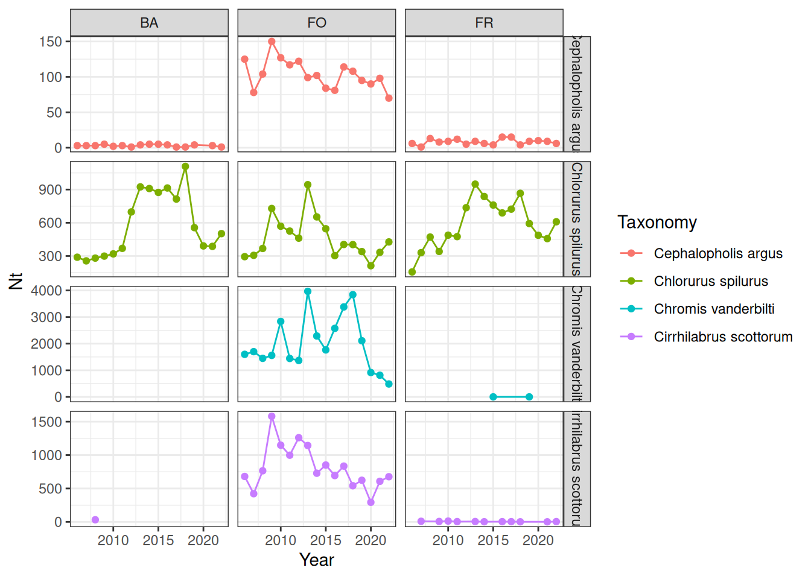
Short Essay Question: How do the temporal trends of reef fish vary between habitats and trophic guilds (5 pts)?
Using R, calculate lambda from one year to the next (i.e., for each time step) for each habitat and species. Try using either a for-loop or functions (1 pt).
df = reeffish |>
filter(Taxonomy %in% reeffish_top$Taxonomy) |>
mutate(Year = as.numeric(Year)) |>
group_by(Taxonomy, Habitat, Year) |>
summarize(Nt = sum(Count)) |>
# arrange(TaxoYear) |>
# group_by(Taxonomy, Habitat) |>
# nest()
mutate(lambda = lead(Nt)/Nt)
## `summarise()` has regrouped the output.
## ℹ Summaries were computed grouped by Taxonomy, Habitat, and Year.
## ℹ Output is grouped by Taxonomy and Habitat.
## ℹ Use `summarise(.groups = "drop_last")` to silence this message.
## ℹ Use `summarise(.by = c(Taxonomy, Habitat, Year))` for per-operation grouping
## (`?dplyr::dplyr_by`) instead.- Calculate the mean(λ) and sd(λ) for the each habitat/species combination using your calculation from Q1.4. Remember to use the geometric mean and its standard deviation (1 pt).
library(DescTools)
g = df |>
group_by(Taxonomy, Habitat) |>
summarize(mean = Gmean(lambda, na.rm = T),
sd = Gsd(lambda, na.rm = T),
.groups = 'drop')
g
## # A tibble: 11 × 4
## Taxonomy Habitat mean sd
## <chr> <chr> <dbl> <dbl>
## 1 Cephalopholis argus BA 0.929 2.28
## 2 Cephalopholis argus FO 0.964 1.26
## 3 Cephalopholis argus FR 1 2.80
## 4 Chlorurus spilurus BA 1.04 1.34
## 5 Chlorurus spilurus FO 1.02 1.47
## 6 Chlorurus spilurus FR 1.09 1.36
## 7 Chromis vanderbilti FO 0.928 1.66
## 8 Chromis vanderbilti FR 1 NA
## 9 Cirrhilabrus scottorum BA NaN NA
## 10 Cirrhilabrus scottorum FO 1.000 1.55
## 11 Cirrhilabrus scottorum FR 0.922 2.26- Using ggplot, plot the mean(λ) calculated in question 5 and the sd(λ). Add a horizontal line when population growth = 0. Make a panel for each habitat to compare lambdas between species (3 pts).
ggplot(g, aes(Taxonomy, mean, color = Taxonomy))+
geom_pointrange(aes(ymin = mean - sd, ymax = mean + sd), size = 1, linewidth = 1.5)+
geom_hline(aes(yintercept = 1), linetype = 'dashed', linewidth = 1)+
scale_color_viridis_d()+
facet_wrap(~Habitat)+
labs(x = 'Species', y = 'λ')+
coord_flip()+
theme_bw()+
theme(legend.position = 'none')
## Warning: Removed 1 row containing missing values or values outside the scale range
## (`geom_pointrange()`).
## Warning: Removed 1 row containing missing values or values outside the scale range
## (`geom_segment()`).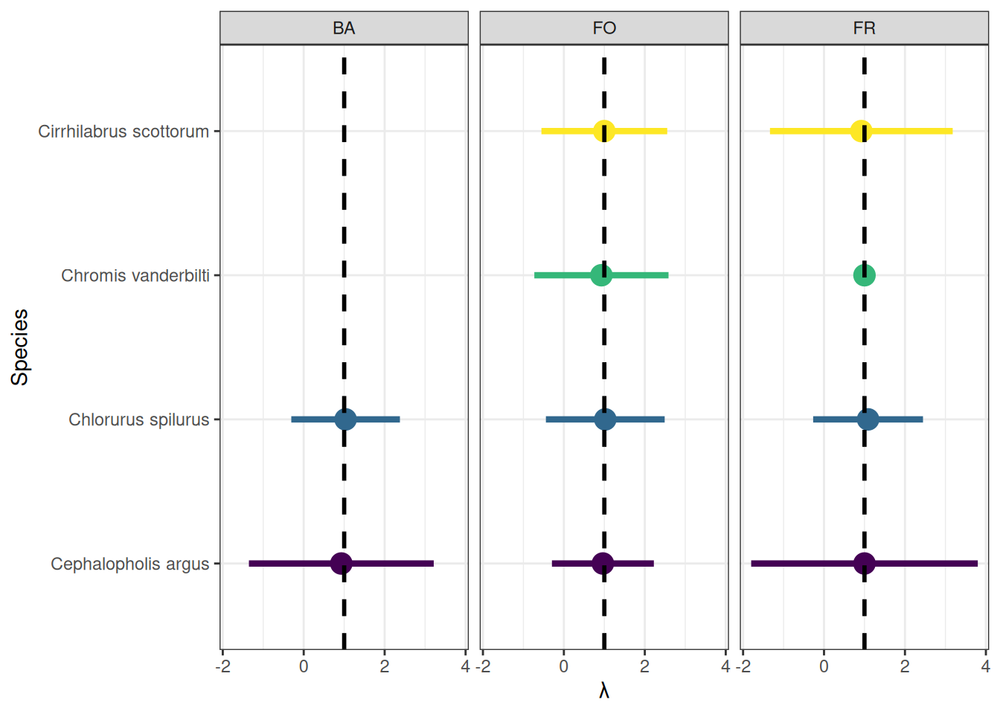
Based on the mean and variance in the finite rate of increase, which populations are growing on average, which populations are declining on average, and which have the highest likelihood of collapse/crash? Hint: See Gotelli Chapter 1 equation 1.9 (5 pts).
Estimate \(K\) from \(\lambda\) and abundance estimates at the habitat level (i.e., total population) for each species. Hint: Remember the linear relationship between density and per-capita growth rate in the density-dependent model discussed in class and the workshop (3 pts).
df = reeffish |>
filter(Taxonomy %in% reeffish_top$Taxonomy) |>
mutate(Year = as.numeric(Year)) |>
group_by(Taxonomy, Habitat, Year) |>
summarize(Nt = sum(Count)) |>
# arrange(TaxoYear) |>
# group_by(Taxonomy, Habitat) |>
# nest()
mutate(lambda = lead(Nt)/Nt,
percap = (lead(Nt)-Nt)/Nt)
## `summarise()` has regrouped the output.
## ℹ Summaries were computed grouped by Taxonomy, Habitat, and Year.
## ℹ Output is grouped by Taxonomy and Habitat.
## ℹ Use `summarise(.groups = "drop_last")` to silence this message.
## ℹ Use `summarise(.by = c(Taxonomy, Habitat, Year))` for per-operation grouping
## (`?dplyr::dplyr_by`) instead.
ggplot(df |> drop_na(), aes(Nt, percap, color = Taxonomy)) +
geom_hline(aes(yintercept = 0))+
geom_smooth(method = 'lm') +
geom_point(size = 2) +
facet_grid(cols = vars(Habitat), rows = vars(Taxonomy), scales = 'free')+
labs(x = expression(italic(N[t])),
y = expression('per capita growth ('~italic(Delta~N[t]/N[t])~')'))+
scale_color_viridis_d(option = 'turbo')+
theme_bw()+
theme(legend.position = 'none')
## `geom_smooth()` using formula = 'y ~ x'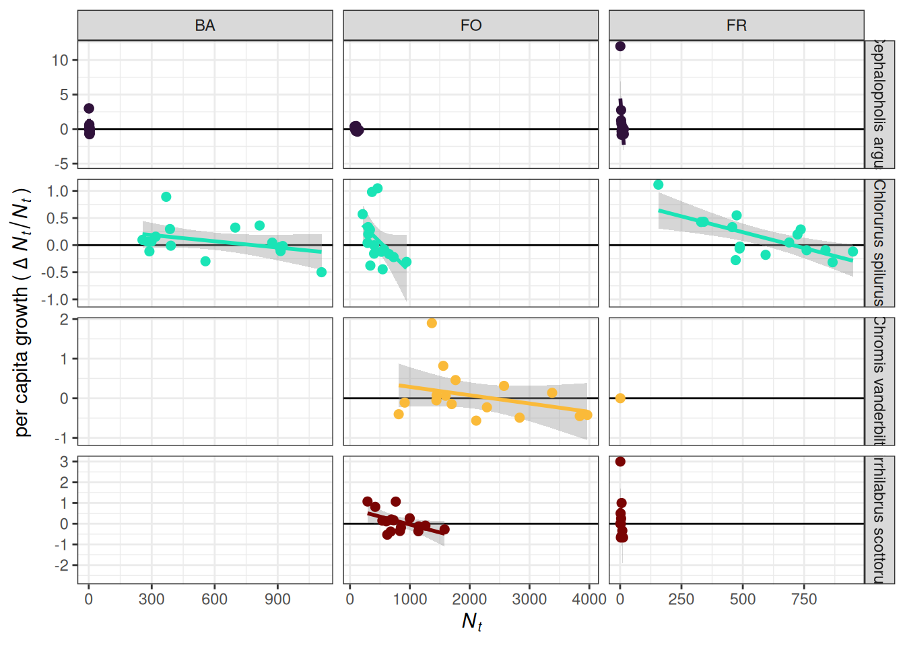
# calculate carry capacity
df_k = df |>
ungroup() |>
drop_na() |>
group_by(Taxonomy, Habitat) |>
nest() |>
mutate(lm = map(data, \(data) lm(percap~ Nt, data = data)),
K = map_dbl(lm, \(lm) -lm$coefficients[1]/lm$coefficients[2])) |>
select(Taxonomy, K)
## Adding missing grouping variables: `Habitat`
df_k
## # A tibble: 10 × 3
## # Groups: Taxonomy, Habitat [10]
## Habitat Taxonomy K
## <chr> <chr> <dbl>
## 1 BA Cephalopholis argus 3.65
## 2 FO Cephalopholis argus 104.
## 3 FR Cephalopholis argus 10.2
## 4 BA Chlorurus spilurus 786.
## 5 FO Chlorurus spilurus 553.
## 6 FR Chlorurus spilurus 704.
## 7 FO Chromis vanderbilti 2365.
## 8 FR Chromis vanderbilti NA
## 9 FO Cirrhilabrus scottorum 949.
## 10 FR Cirrhilabrus scottorum 6.33- Using a discrete density-dependent growth model, project the population growth for each species at each habitat to 150 years based on the carrying capacity values estimated in Q8 and a starting population size of 500 individuals. Hint: \(1 + r_d = \lambda\); See Gotelli pages 35-37 and pages Stevens 62-68 (3 pts).
g = df |>
group_by(Taxonomy, Habitat) |>
summarize(mean = Gmean(lambda, na.rm = T),
sd = Gsd(lambda, na.rm = T),
.groups = 'drop') |>
mutate(rd = mean -1) |>
drop_na()
# logistic growth funciton
dlogisticD = function(K, rd, N_0, years) {
logis = tibble(Nt = NA, time = 0:years)
logis$Nt[logis$time == 0] = N_0
for(i in 1:(length(logis$time)-1)){
logis$Nt[i+1] = logis$Nt[i] + rd*logis$Nt[i]*(1 - logis$Nt[i] / K)
}
return(logis)
}
popdd = df_k |>
right_join(g) |>
mutate(Nt = map2(K, rd, \(K, rd) dlogisticD(K, rd, N_0 = 500, years = 150))) |>
unnest(Nt)
## Joining with `by = join_by(Habitat, Taxonomy)`- Using the discrete density-independent growth model, project the population for each species at each habitat using a random \(\lambda\) the mean and sd calculated in question 6 above. Using the same starting population size of 500 individuals and for 150 years. Repeat this process 50 times and calculate the mean and standard deviation of the population size for each time step across the 50 iterations. (5 pts)
g = df |>
group_by(Taxonomy, Habitat) |>
summarize(mean = Gmean(lambda, na.rm = T),
sd = Gsd(lambda, na.rm = T),
.groups = 'drop') |>
mutate(rd = mean -1) |>
drop_na()
# logistic growth funciton
dirand = function(l_mean, l_sd, N_0, years) {
pop = tibble(Nt = NA, time = 0:years) |>
mutate(Nt = if_else(time == 0, N_0, Nt),
lambda = truncnorm::rtruncnorm(n(), mean = l_mean, sd = l_sd, a=0, b=Inf))
for(i in 2:nrow(pop)){
pop$Nt[i] = pop$lambda[i-1] * pop$Nt[i-1]
}
return(pop)
}
reps = 50
pop = g |>
slice(rep(1:n(), each=reps))|>
mutate(i = rep(1:reps, times=nrow(g)),
Nt = map2(mean, sd, \(mean, sd) dirand(mean, sd, N_0 = 500, years = 150))) |>
unnest(Nt) |>
group_by(Taxonomy, Habitat, time) |>
summarize(mean = mean(Nt),
sd = sd(Nt))
## `summarise()` has regrouped the output.
## ℹ Summaries were computed grouped by Taxonomy, Habitat, and time.
## ℹ Output is grouped by Taxonomy and Habitat.
## ℹ Use `summarise(.groups = "drop_last")` to silence this message.
## ℹ Use `summarise(.by = c(Taxonomy, Habitat, time))` for per-operation grouping
## (`?dplyr::dplyr_by`) instead.- Using ggplot, plot the population projections for each species and habitat for questions 9 and 10. For the density independent populations plot both the mean and sd of the projections, and plot one panel per species and habitat combination (2 pt).
-Hint: For the density independent plot, plot the trend line with error bounds
ggplot(popdd, aes(time, Nt))+
geom_point()+
geom_line()+
facet_grid(cols = vars(Habitat), rows = vars(Taxonomy), scales = 'free_y')+
theme_bw()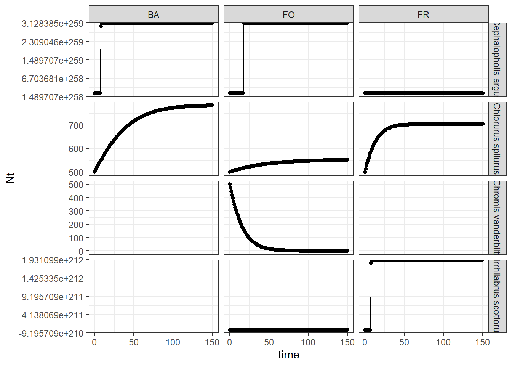
ggplot(pop, aes(time, mean))+
geom_ribbon(aes(ymin = mean-sd, ymax = mean+sd), fill = 'grey80')+
geom_point()+
geom_line()+
facet_grid(cols = vars(Habitat), rows = vars(Taxonomy), scales = 'free')+
theme_bw()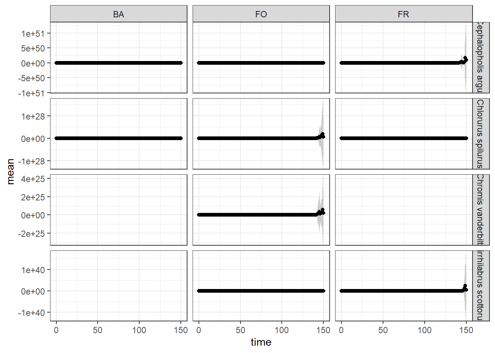
- Short essay question: How do the projections for each species differ? Did the population get as far as the carrying capacity? Why or why not? If not, how many years are required to reach the carrying capacity? When at carrying capacity, do the population fluctuate around K? Why or Why not? How do the different model types compare (5 pts)
Section 2 (20 pts)

- Convert Table 1 from Lirman et al. 2003 above into a projection matrix (1 pt).
A = matrix(c(0.9,0.15,0.05,0.1,0.45,0,0.06,0.25,0.45), nrow = 3, byrow = T)
A
## [,1] [,2] [,3]
## [1,] 0.90 0.15 0.05
## [2,] 0.10 0.45 0.00
## [3,] 0.06 0.25 0.45- Create a starting population vector based on the life stages of this coral species: colonies (N = 100), fragments (N = 0), crust (N = 0). Project the population up to 50 years using the starting population vector and the projection matrix you created (hint: A%*%n(t); See Stevens Chapter 2 pages 34-40) Repeat the process with 100 individuals for fragments and 0 for the other life stages.(6 pts).
library(popbio)
nc = c(colonies = 100, fragments = 0, crusts = 0)
popc = pop.projection(A, nc, 50)
nf = c(colonies = 0, fragments = 100, crusts = 0)
popf = pop.projection(A, nf, 50)- Plot your results using ggplot, popbio, or base R plotting functions. Plot the projection for each stage class (2 pts).
stage.vector.plot(popc$stage.vectors)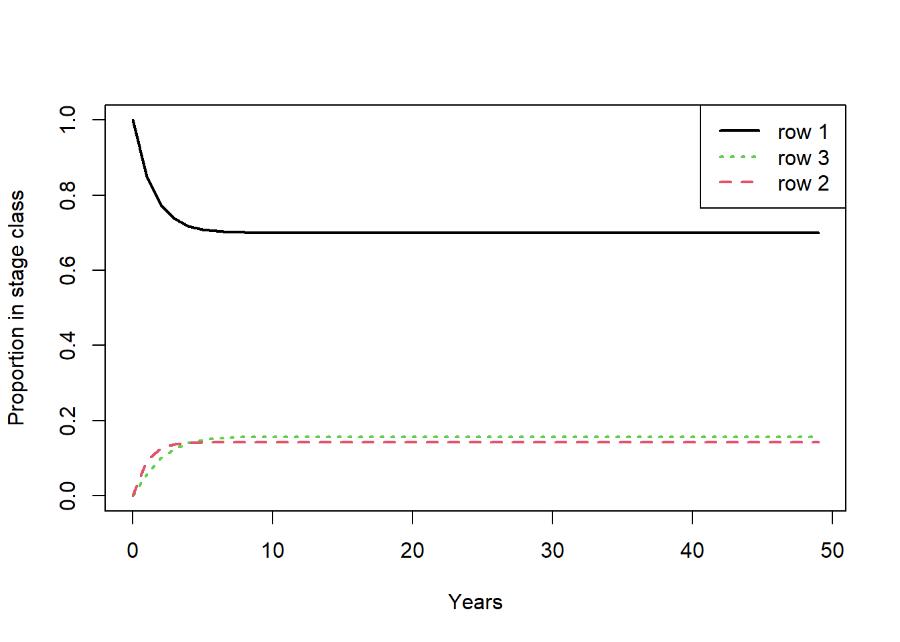
stage.vector.plot(popf$stage.vectors)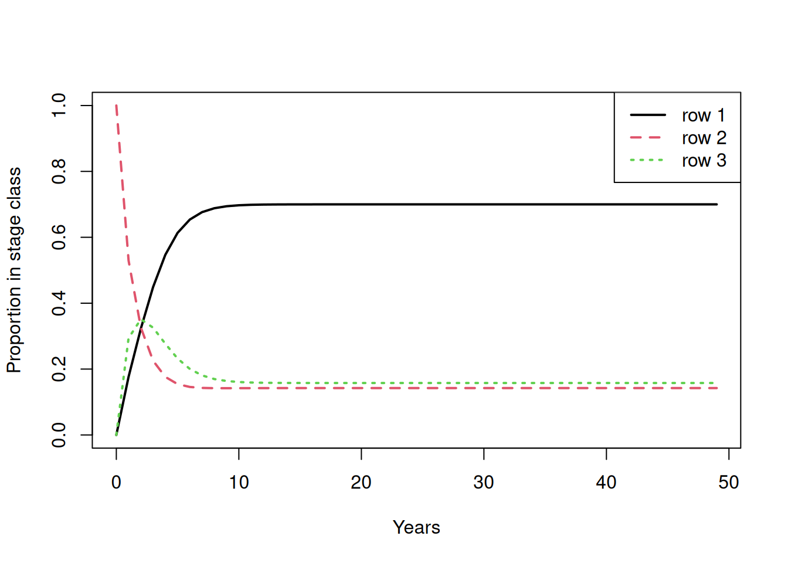
Short essay question: Looking at the plot from Q3, did the population projections reach a stable stage distribution? Why or why not? What could you tell about the fate of the populations after 50 years? How do the population sizes differ depending on the different stage specific starting abundances (5 pts)?
Based on the project matrix above, calculate lambda and calculate the stable stage distribution (1 pt).
popc$lambda
## [1] 0.9417711
popc$stable.stage
## [1] 0.6999227 0.1423269 0.1577504
popf$lambda
## [1] 0.9417711
popf$stable.stage
## [1] 0.6999227 0.1423269 0.1577504- Short essay question: What is the proportion between the stages at SSD? What stage is the dominant stage of the population after the stable stage distribution is reached? Why? (5 pts).
Section 3 - Exploratory Analysis of the Community (20 pts)
- Upload the MCR fish survey data and calculate the total abundance of each species at each habitat per year. (5pts)
reeffish = read_csv("./data/MCR_LTER_Annual_Fish_Survey_20230615.csv")
## Warning: One or more parsing issues, call `problems()` on your data frame for details,
## e.g.:
## dat <- vroom(...)
## problems(dat)
## Rows: 100841 Columns: 25
## ── Column specification ────────────────────────────────────────────────────────
## Delimiter: ","
## chr (9): Year, Location, Habitat, Taxonomy, Family, Comment, Coarse_Trophi...
## dbl (13): Site, Transect, Swath, Count, Total_Length, Length_Anomaly, Bioma...
## date (1): Date
## time (2): Start, End
##
## ℹ Use `spec()` to retrieve the full column specification for this data.
## ℹ Specify the column types or set `show_col_types = FALSE` to quiet this message.
df = reeffish |>
mutate(Year = as.numeric(Year)) |>
group_by(Year, Taxonomy, Habitat) |>
summarize(abund = sum(Count),
.groups = 'drop') |>
drop_na()
## Warning: There was 1 warning in `mutate()`.
## ℹ In argument: `Year = as.numeric(Year)`.
## Caused by warning:
## ! NAs introduced by coercion- Identify the species that account for 75% of the abundance across the entire time series. (5 pts).
df75 = read_csv("data/MCR_LTER_Annual_Fish_Survey_20230615.csv") |>
#drop_na(Year) |>
group_by(Taxonomy) |>
summarize(ab = sum(Count), .groups = 'drop') |>
arrange(-ab) |>
mutate(prop = cumsum(ab)/sum(ab, na.rm = T)) |>
filter(prop < 0.75)
## Warning: One or more parsing issues, call `problems()` on your data frame for details,
## e.g.:
## dat <- vroom(...)
## problems(dat)
## Rows: 100841 Columns: 25
## ── Column specification ────────────────────────────────────────────────────────
## Delimiter: ","
## chr (9): Year, Location, Habitat, Taxonomy, Family, Comment, Coarse_Trophi...
## dbl (13): Site, Transect, Swath, Count, Total_Length, Length_Anomaly, Bioma...
## date (1): Date
## time (2): Start, End
##
## ℹ Use `spec()` to retrieve the full column specification for this data.
## ℹ Specify the column types or set `show_col_types = FALSE` to quiet this message.
df75$Taxonomy
## [1] "Chromis vanderbilti" "Chlorurus spilurus"
## [3] "Ctenochaetus striatus" "Chromis acares"
## [5] "Chromis iomelas" "Scarus psittacus"
## [7] "Cirrhilabrus scottorum" "Acanthurus nigrofuscus"
## [9] "Zebrasoma scopas" "Thalassoma hardwicke"
## [11] "Acanthurus triostegus" "Dascyllus flavicaudus"
## [13] "Chromis viridis" "Centropyge flavissima"
## [15] "Chromis margaritifer" "Pomachromis fuscidorsalis"
## [17] "Stegastes nigricans" "Lepidozygus tapeinosoma"
## [19] "Pomacentrus pavo" "Paracirrhites arcatus"
## [21] "Neocirrhites armatus" "Pseudanthias olivaceus"
## [23] "Ctenochaetus flavicauda" "Centropyge bispinosa"
## [25] "Pseudanthias pascalus" "Parupeneus multifasciatus"
## [27] "Chaetodon pelewensis" "Odonus niger"
## [29] "Halichoeres claudia" "Naso lituratus"
## [31] "Pseudocheilinus hexataenia" "Plectroglyphidodon johnstonianus"
## [33] "Thalassoma quinquevittatum"- Calculate the average total abundance per year at each habitat for each of the species that make up 75% of the abundance, and plot the average abundance for each species at each site using a heat map (5 pts). -Hint:
geom_raster().
df_aa = df |>
filter(Taxonomy %in% df75$Taxonomy) |>
group_by(Year, Habitat, Taxonomy) |>
summarize(abund = mean(abund))
## `summarise()` has regrouped the output.
## ℹ Summaries were computed grouped by Year, Habitat, and Taxonomy.
## ℹ Output is grouped by Year and Habitat.
## ℹ Use `summarise(.groups = "drop_last")` to silence this message.
## ℹ Use `summarise(.by = c(Year, Habitat, Taxonomy))` for per-operation grouping
## (`?dplyr::dplyr_by`) instead.
ggplot(df_aa, aes(Habitat, Taxonomy))+
geom_raster(aes(fill = log(abund)))+
scale_fill_viridis_c(option = 'mako')+
theme_bw()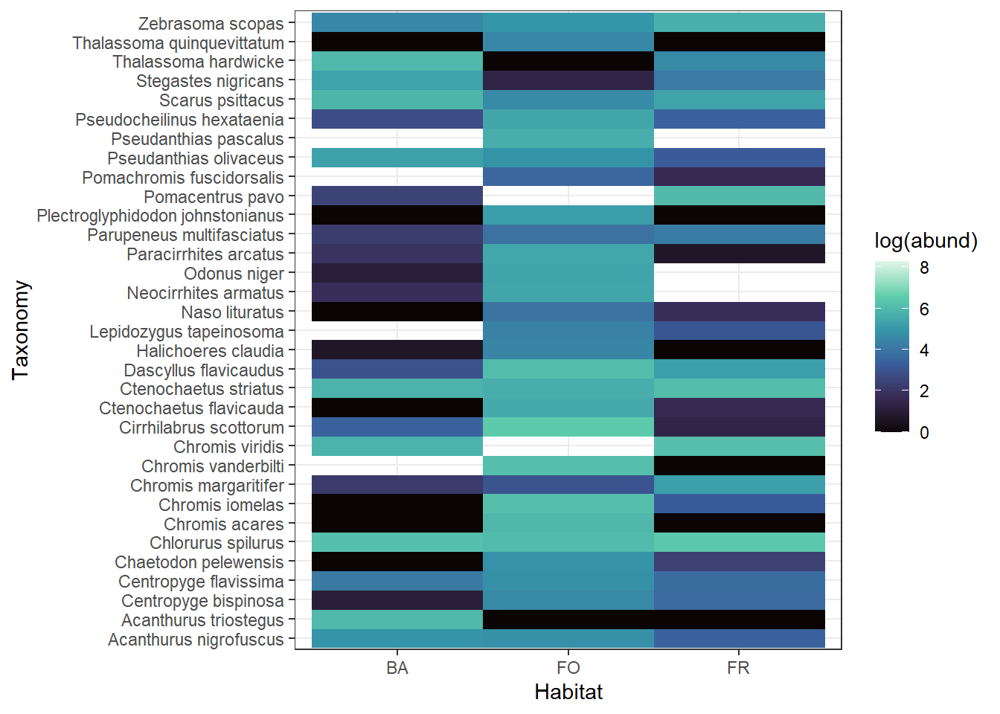
- Short essay question 1.1: Based on the heatmaps, what can you conclude about the communities/assemblages across habitat? (5 pts)
Section 4 – Univarite metrics of diversity (20 pts)
- Using the
veganpackage or a for loop, calculate the species richness, inverse Simpson index, and Shannon index (\(H\)) per year for each site (5 pts).
library(vegan)
## Loading required package: permute
# with only 75%
df = read_csv("data/MCR_LTER_Annual_Fish_Survey_20230615.csv") |>
filter(Taxonomy %in% df75$Taxonomy) |>
group_by(Year, Site, Taxonomy) |>
summarize(abund = sum(Count), .groups = 'drop') |>
pivot_wider(names_from = Taxonomy, values_from = abund, values_fill = 0) |>
nest(.by = c(Site, Year)) |>
mutate(sr = map_dbl(data, \(data) specnumber(data)),
inv = map_dbl(data, \(data) diversity(data, 'inv')),
H = map_dbl(data, \(data) diversity(data)))
## Warning: One or more parsing issues, call `problems()` on your data frame for details,
## e.g.:
## dat <- vroom(...)
## problems(dat)
## Rows: 100841 Columns: 25
## ── Column specification ────────────────────────────────────────────────────────
## Delimiter: ","
## chr (9): Year, Location, Habitat, Taxonomy, Family, Comment, Coarse_Trophi...
## dbl (13): Site, Transect, Swath, Count, Total_Length, Length_Anomaly, Bioma...
## date (1): Date
## time (2): Start, End
##
## ℹ Use `spec()` to retrieve the full column specification for this data.
## ℹ Specify the column types or set `show_col_types = FALSE` to quiet this message.
df
## # A tibble: 102 × 6
## Site Year data sr inv H
## <dbl> <chr> <list> <dbl> <dbl> <dbl>
## 1 1 2006 <tibble [1 × 33]> 31 11.8 2.80
## 2 2 2006 <tibble [1 × 33]> 31 11.5 2.80
## 3 3 2006 <tibble [1 × 33]> 27 9.59 2.65
## 4 4 2006 <tibble [1 × 33]> 31 9.41 2.72
## 5 5 2006 <tibble [1 × 33]> 28 5.92 2.37
## 6 6 2006 <tibble [1 × 33]> 27 11.5 2.74
## 7 1 2007 <tibble [1 × 33]> 28 14.8 2.94
## 8 2 2007 <tibble [1 × 33]> 30 14.0 2.93
## 9 3 2007 <tibble [1 × 33]> 27 11.1 2.77
## 10 4 2007 <tibble [1 × 33]> 30 12.9 2.87
## # ℹ 92 more rows
df_hab = read_csv("data/MCR_LTER_Annual_Fish_Survey_20230615.csv") |>
filter(Taxonomy %in% df75$Taxonomy) |>
group_by(Year, Habitat, Taxonomy) |>
summarize(abund = sum(Count), .groups = 'drop') |>
pivot_wider(names_from = Taxonomy, values_from = abund, values_fill = 0) |>
nest(.by = c(Habitat, Year)) |>
mutate(sr = map_dbl(data, \(data) specnumber(data)),
inv = map_dbl(data, \(data) diversity(data, 'inv')),
H = map_dbl(data, \(data) diversity(data)))
## Warning: One or more parsing issues, call `problems()` on your data frame for details,
## e.g.:
## dat <- vroom(...)
## problems(dat)
## Rows: 100841 Columns: 25
## ── Column specification ────────────────────────────────────────────────────────
## Delimiter: ","
## chr (9): Year, Location, Habitat, Taxonomy, Family, Comment, Coarse_Trophi...
## dbl (13): Site, Transect, Swath, Count, Total_Length, Length_Anomaly, Bioma...
## date (1): Date
## time (2): Start, End
##
## ℹ Use `spec()` to retrieve the full column specification for this data.
## ℹ Specify the column types or set `show_col_types = FALSE` to quiet this message.
df_hab
## # A tibble: 51 × 6
## Habitat Year data sr inv H
## <chr> <chr> <list> <dbl> <dbl> <dbl>
## 1 BA 2006 <tibble [1 × 33]> 25 7.29 2.28
## 2 FO 2006 <tibble [1 × 33]> 30 12.4 2.83
## 3 FR 2006 <tibble [1 × 33]> 20 10.1 2.57
## 4 BA 2007 <tibble [1 × 33]> 20 8.65 2.33
## 5 FO 2007 <tibble [1 × 33]> 28 10.9 2.75
## 6 FR 2007 <tibble [1 × 33]> 19 12.0 2.62
## 7 BA 2008 <tibble [1 × 33]> 23 4.92 2.09
## 8 FO 2008 <tibble [1 × 33]> 29 13.4 2.91
## 9 FR 2008 <tibble [1 × 33]> 20 11.9 2.63
## 10 BA 2009 <tibble [1 × 33]> 20 8.33 2.32
## # ℹ 41 more rows
df_hab_all = read_csv("data/MCR_LTER_Annual_Fish_Survey_20230615.csv") |>
#filter(Taxonomy %in% df75$Taxonomy) |>
group_by(Year, Habitat, Taxonomy) |>
summarize(abund = sum(Count), .groups = 'drop') |>
pivot_wider(names_from = Taxonomy, values_from = abund, values_fill = 0) |>
nest(.by = c(Habitat, Year)) |>
mutate(sr = map_dbl(data, \(data) specnumber(data)),
inv = map_dbl(data, \(data) diversity(data, 'inv')),
H = map_dbl(data, \(data) diversity(data))) |>
drop_na(sr)
## Warning: One or more parsing issues, call `problems()` on your data frame for details,
## e.g.:
## dat <- vroom(...)
## problems(dat)
## Rows: 100841 Columns: 25
## ── Column specification ────────────────────────────────────────────────────────
## Delimiter: ","
## chr (9): Year, Location, Habitat, Taxonomy, Family, Comment, Coarse_Trophi...
## dbl (13): Site, Transect, Swath, Count, Total_Length, Length_Anomaly, Bioma...
## date (1): Date
## time (2): Start, End
##
## ℹ Use `spec()` to retrieve the full column specification for this data.
## ℹ Specify the column types or set `show_col_types = FALSE` to quiet this message.
df_hab_all
## # A tibble: 51 × 6
## Habitat Year data sr inv H
## <chr> <chr> <list> <dbl> <dbl> <dbl>
## 1 BA 2006 <tibble [1 × 402]> 127 13.8 3.30
## 2 FO 2006 <tibble [1 × 402]> 165 19.4 3.56
## 3 FR 2006 <tibble [1 × 402]> 144 26.9 3.91
## 4 BA 2007 <tibble [1 × 402]> 124 18.5 3.43
## 5 FO 2007 <tibble [1 × 402]> 141 17.6 3.53
## 6 FR 2007 <tibble [1 × 402]> 144 29.9 3.89
## 7 BA 2008 <tibble [1 × 402]> 123 8.10 3.00
## 8 FO 2008 <tibble [1 × 402]> 157 20.9 3.62
## 9 FR 2008 <tibble [1 × 402]> 141 29.8 3.89
## 10 BA 2009 <tibble [1 × 402]> 124 18.4 3.49
## # ℹ 41 more rows- Calculate the rarefaction species richness of each habitat and year. Plot the distribution of points at each site (e.g. boxplot) (5 pts)
-Hint: Make a column that contains both the site and the year to use as rownames of your matrix
df = df |>
mutate(rare = map_dbl(data, \(data) rarefy(data, sample = 50)))
## Warning: There were 61 warnings in `mutate()`.
## The first warning was:
## ℹ In argument: `rare = map_dbl(data, function(data) rarefy(data, sample =
## 50))`.
## Caused by warning in `rarefy()`:
## ! most observed count data have counts 1, but smallest count is 2
## ℹ Run `dplyr::last_dplyr_warnings()` to see the 60 remaining warnings.
ggplot(df, aes(as.character(Site), rare, fill = Site))+
geom_jitter(aes(color = Site), size = 2)+
geom_boxplot(alpha = 0.6, outliers = F)+
labs(x = 'Site', y = 'Rarefaction species richness')+
scale_color_viridis_c(option = 'turbo')+
scale_fill_viridis_c(option = 'turbo')+
theme_bw()+
theme(legend.position = 'none')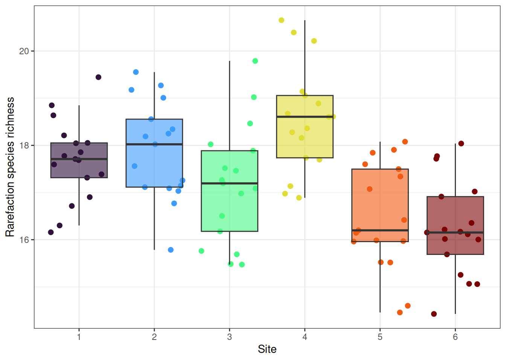
# habitat data
df_hab = df_hab |>
mutate(rare = map_dbl(data, \(data) rarefy(data, sample = 50)))
## Warning: There were 15 warnings in `mutate()`.
## The first warning was:
## ℹ In argument: `rare = map_dbl(data, function(data) rarefy(data, sample =
## 50))`.
## Caused by warning in `rarefy()`:
## ! most observed count data have counts 1, but smallest count is 5
## ℹ Run `dplyr::last_dplyr_warnings()` to see the 14 remaining warnings.
ggplot(df_hab, aes(Habitat, rare, fill = Habitat))+
geom_jitter(aes(color = Habitat), size = 2)+
geom_boxplot(alpha = 0.6, outliers = F)+
labs(x = 'Site', y = 'Rarefaction species richness')+
scale_color_viridis_d(option = 'turbo')+
scale_fill_viridis_d(option = 'turbo')+
theme_bw()+
theme(legend.position = 'none')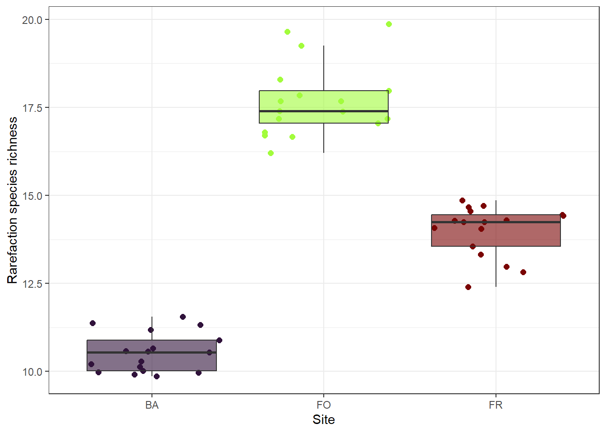
# not 75% of data
df_hab_all = df_hab_all |>
mutate(rare = map_dbl(data, \(data) rarefy(data, sample = 50)))
ggplot(df_hab_all, aes(Habitat, rare, fill = Habitat))+
geom_jitter(aes(color = Habitat), size = 2)+
geom_boxplot(alpha = 0.6, outliers = F)+
labs(x = 'Site', y = 'Rarefaction species richness')+
scale_color_viridis_d(option = 'turbo')+
scale_fill_viridis_d(option = 'turbo')+
theme_bw()+
theme(legend.position = 'none')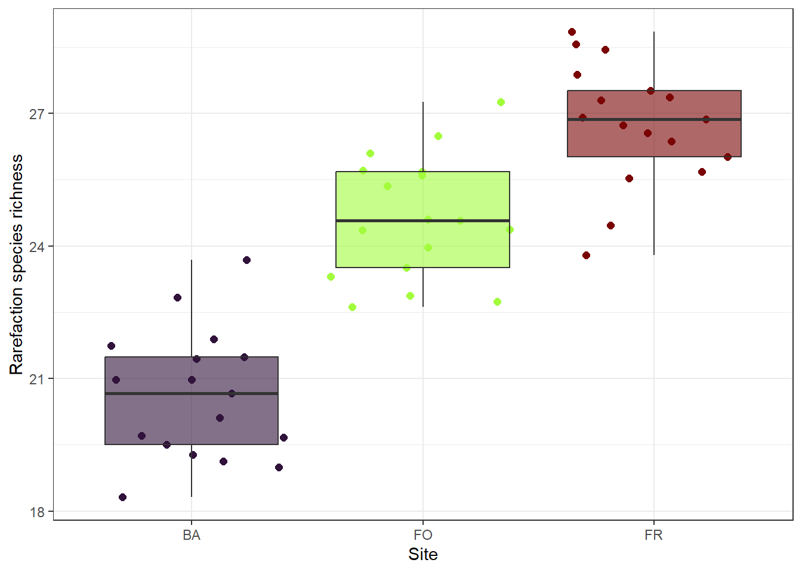
- Plot each diversity metric from question 1 and for each year and site (3 pts).
met = df |>
select(-data) |>
pivot_longer(sr:rare, names_to = 'metric', values_to = 'value')
ggplot(met, aes(as.numeric(Year), value, group = Site, color = Site))+
geom_point(size = 2)+
geom_line(linewidth = 1)+
labs(x = 'Year', y = 'Metric')+
scale_color_viridis_c(option = 'turbo')+
facet_wrap(~metric, scales = 'free')+
theme_bw()+
theme(legend.position = 'bottom')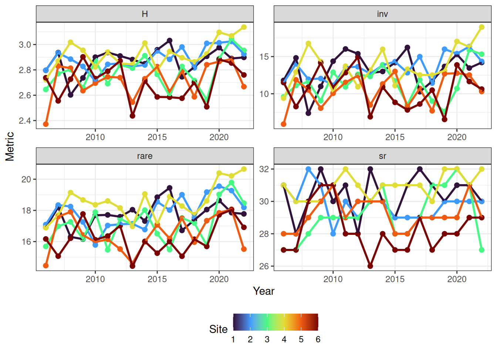
met_hab = df_hab |>
select(-data) |>
pivot_longer(sr:rare, names_to = 'metric', values_to = 'value')
ggplot(met_hab, aes(as.numeric(Year), value, group = Habitat, color = Habitat))+
geom_point(size = 2)+
geom_line(linewidth = 1)+
labs(x = 'Year', y = 'Metric')+
scale_color_viridis_d(option = 'turbo')+
facet_wrap(~metric, scales = 'free')+
theme_bw()+
theme(legend.position = 'bottom')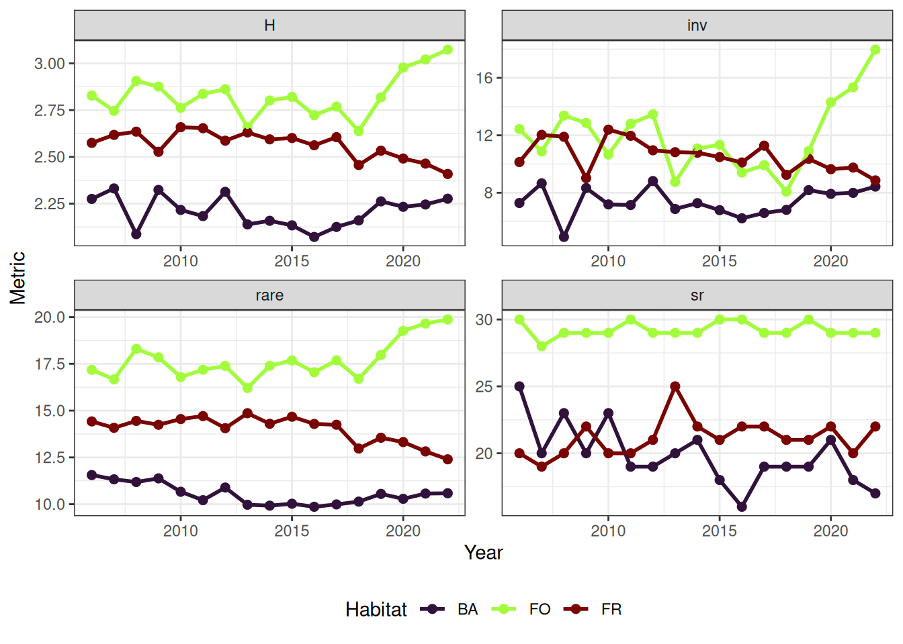
met_hab_all = df_hab_all |>
select(-data) |>
pivot_longer(sr:rare, names_to = 'metric', values_to = 'value')
ggplot(met_hab_all, aes(as.numeric(Year), value, group = Habitat, color = Habitat))+
geom_point(size = 2)+
geom_line(linewidth = 1)+
labs(x = 'Year', y = 'Metric')+
scale_color_viridis_d(option = 'turbo')+
facet_wrap(~metric, scales = 'free')+
theme_bw()+
theme(legend.position = 'bottom')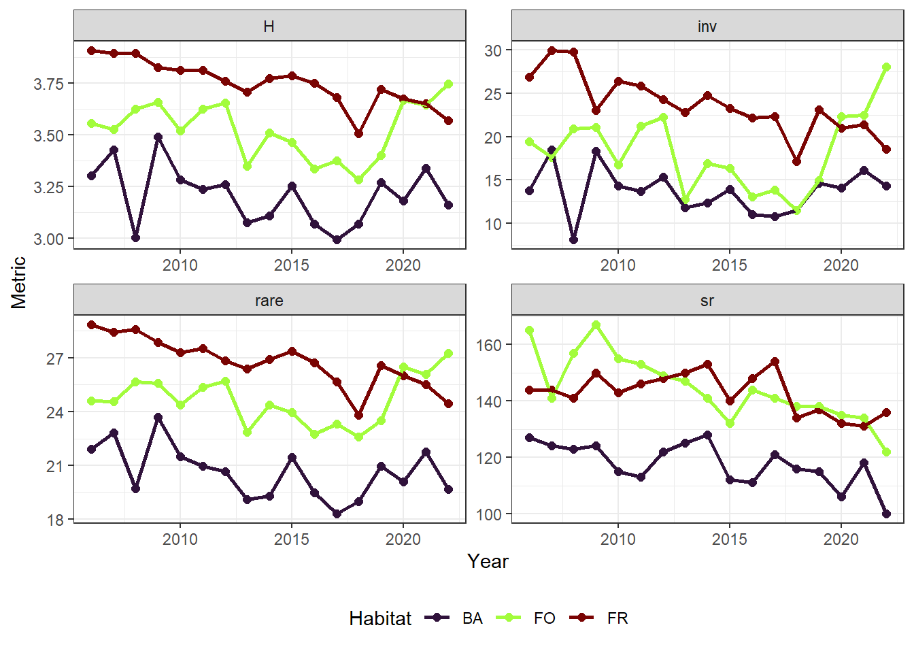
- Short essay question 2.1: Based on species richness, Simpson, and Shannon indices and rarefraction species richness, what is happening to species diversity across sites and years? What can you tell about species evenness by looking at the plot? (7 pts).
Section 5 - Community assemblage dissimilarities (20 pts)
- Create a community matrix with the total abundance per species per habitat per site (5 pts).
m = read_csv("data/MCR_LTER_Annual_Fish_Survey_20230615.csv") |>
filter(Taxonomy %in% df75$Taxonomy) |>
group_by(Year, Site, Taxonomy) |>
summarize(abund = sum(Count), .groups = 'drop') |>
pivot_wider(names_from = Taxonomy, values_from = abund, values_fill = 0) |>
unite(sy, c('Site', 'Year')) |>
column_to_rownames('sy')
## Warning: One or more parsing issues, call `problems()` on your data frame for details,
## e.g.:
## dat <- vroom(...)
## problems(dat)
## Rows: 100841 Columns: 25
## ── Column specification ────────────────────────────────────────────────────────
## Delimiter: ","
## chr (9): Year, Location, Habitat, Taxonomy, Family, Comment, Coarse_Trophi...
## dbl (13): Site, Transect, Swath, Count, Total_Length, Length_Anomaly, Bioma...
## date (1): Date
## time (2): Start, End
##
## ℹ Use `spec()` to retrieve the full column specification for this data.
## ℹ Specify the column types or set `show_col_types = FALSE` to quiet this message.
m_hab = read_csv("data/MCR_LTER_Annual_Fish_Survey_20230615.csv") |>
filter(Taxonomy %in% df75$Taxonomy) |>
group_by(Year, Habitat, Taxonomy) |>
summarize(abund = sum(Count), .groups = 'drop') |>
pivot_wider(names_from = Taxonomy, values_from = abund, values_fill = 0) |>
unite(hy, c('Habitat', 'Year')) |>
column_to_rownames('hy')
## Warning: One or more parsing issues, call `problems()` on your data frame for details,
## e.g.:
## dat <- vroom(...)
## problems(dat)
## Rows: 100841 Columns: 25
## ── Column specification ────────────────────────────────────────────────────────
## Delimiter: ","
## chr (9): Year, Location, Habitat, Taxonomy, Family, Comment, Coarse_Trophi...
## dbl (13): Site, Transect, Swath, Count, Total_Length, Length_Anomaly, Bioma...
## date (1): Date
## time (2): Start, End
##
## ℹ Use `spec()` to retrieve the full column specification for this data.
## ℹ Specify the column types or set `show_col_types = FALSE` to quiet this message.
m_sh = read_csv("data/MCR_LTER_Annual_Fish_Survey_20230615.csv") |>
filter(Taxonomy %in% df75$Taxonomy) |>
group_by(Site, Habitat, Taxonomy) |>
summarize(abund = sum(Count), .groups = 'drop') |>
pivot_wider(names_from = Taxonomy, values_from = abund, values_fill = 0) |>
unite(hy, c('Habitat', 'Site')) |>
column_to_rownames('hy')
## Warning: One or more parsing issues, call `problems()` on your data frame for details,
## e.g.:
## dat <- vroom(...)
## problems(dat)
## Rows: 100841 Columns: 25
## ── Column specification ────────────────────────────────────────────────────────
## Delimiter: ","
## chr (9): Year, Location, Habitat, Taxonomy, Family, Comment, Coarse_Trophi...
## dbl (13): Site, Transect, Swath, Count, Total_Length, Length_Anomaly, Bioma...
## date (1): Date
## time (2): Start, End
##
## ℹ Use `spec()` to retrieve the full column specification for this data.
## ℹ Specify the column types or set `show_col_types = FALSE` to quiet this message.
m_sh_a = read_csv("data/MCR_LTER_Annual_Fish_Survey_20230615.csv") |>
#filter(Taxonomy %in% df75$Taxonomy) |>
group_by(Site, Habitat, Taxonomy) |>
summarize(abund = sum(Count), .groups = 'drop') |>
drop_na(Taxonomy) |>
pivot_wider(names_from = Taxonomy, values_from = abund, values_fill = 0) |>
unite(hy, c('Habitat', 'Site')) |>
column_to_rownames('hy')
## Warning: One or more parsing issues, call `problems()` on your data frame for details,
## e.g.:
## dat <- vroom(...)
## problems(dat)
## Rows: 100841 Columns: 25
## ── Column specification ────────────────────────────────────────────────────────
## Delimiter: ","
## chr (9): Year, Location, Habitat, Taxonomy, Family, Comment, Coarse_Trophi...
## dbl (13): Site, Transect, Swath, Count, Total_Length, Length_Anomaly, Bioma...
## date (1): Date
## time (2): Start, End
##
## ℹ Use `spec()` to retrieve the full column specification for this data.
## ℹ Specify the column types or set `show_col_types = FALSE` to quiet this message.- Calculate the Jaccard dissimilarity and identify which points have the lowest and highest dissimilarity (5 pts). -Hint: Make a column that contains both the site and the year to use as rownames of your matrix
# site year
jd = vegdist(m, method = 'jaccard') |> as.matrix()
which(jd == min(jd[jd != 0]), arr.ind = TRUE)
## row col
## 2_2018 74 68
## 2_2017 68 74
which(jd == max(jd[jd != 0]), arr.ind = TRUE)
## row col
## 5_2013 47 3
## 3_2006 3 47
# habitat year
jd_hab = vegdist(m_hab, method = 'jaccard') |> as.matrix()
which(jd_hab == min(jd_hab[jd_hab != 0]), arr.ind = TRUE)
## row col
## BA_2011 16 13
## BA_2010 13 16
which(jd_hab == max(jd_hab[jd_hab != 0]), arr.ind = TRUE)
## row col
## BA_2020 43 38
## FO_2018 38 43
# habitat site
jd_sh = vegdist(m_sh, method = 'jaccard') |> as.matrix()
which(jd_sh == min(jd_sh[jd_sh != 0]), arr.ind = TRUE)
## row col
## BA_5 13 1
## BA_1 1 13
which(jd_sh == max(jd_sh[jd_sh != 0]), arr.ind = TRUE)
## row col
## BA_6 16 11
## FO_4 11 16
# habitat site all
jd_sh_a = vegdist(m_sh_a, method = 'jaccard') |> as.matrix()
which(jd_sh_a == min(jd_sh_a[jd_sh_a != 0]), arr.ind = TRUE)
## row col
## FO_2 5 2
## FO_1 2 5
which(jd_sh_a == max(jd_sh_a[jd_sh_a != 0]), arr.ind = TRUE)
## row col
## BA_6 16 11
## FO_4 11 16- Project dissimilarity into 2-dimensional space using nonmetric multidimensional scaling and illustrate the results in a biplot (5 pts).
# site year
nmds.jc = metaMDS(m, distance = "jaccard", k = 2, try = 100)
## Square root transformation
## Wisconsin double standardization
## Run 0 stress 0.1795394
## Run 1 stress 0.1795393
## ... New best solution
## ... Procrustes: rmse 2.723779e-05 max resid 0.0001185004
## ... Similar to previous best
## Run 2 stress 0.2028473
## Run 3 stress 0.1797985
## ... Procrustes: rmse 0.006807999 max resid 0.05931219
## Run 4 stress 0.1814694
## Run 5 stress 0.1795393
## ... New best solution
## ... Procrustes: rmse 9.627842e-06 max resid 6.038096e-05
## ... Similar to previous best
## Run 6 stress 0.2271226
## Run 7 stress 0.2280333
## Run 8 stress 0.1797799
## ... Procrustes: rmse 0.006324723 max resid 0.0572562
## Run 9 stress 0.1795393
## ... New best solution
## ... Procrustes: rmse 8.480067e-06 max resid 4.826525e-05
## ... Similar to previous best
## Run 10 stress 0.182395
## Run 11 stress 0.2171996
## Run 12 stress 0.2051766
## Run 13 stress 0.1795393
## ... Procrustes: rmse 7.003457e-06 max resid 4.740742e-05
## ... Similar to previous best
## Run 14 stress 0.1795393
## ... Procrustes: rmse 1.083944e-05 max resid 6.056027e-05
## ... Similar to previous best
## Run 15 stress 0.1797986
## ... Procrustes: rmse 0.006792712 max resid 0.05922304
## Run 16 stress 0.1797985
## ... Procrustes: rmse 0.0067777 max resid 0.05915066
## Run 17 stress 0.219369
## Run 18 stress 0.1823892
## Run 19 stress 0.1795427
## ... Procrustes: rmse 0.0005248838 max resid 0.004142173
## ... Similar to previous best
## Run 20 stress 0.2028204
## *** Best solution repeated 4 times
nmds_output = data.frame(nmds.jc[["points"]]) |>
rownames_to_column('sy') |>
separate(sy, into = c("Site", "Year"), sep = "_")
ggplot(nmds_output, aes(MDS1, MDS2, color = Site))+
geom_point(size = 4)+
scale_color_viridis_d(option = 'turbo')+
theme_bw()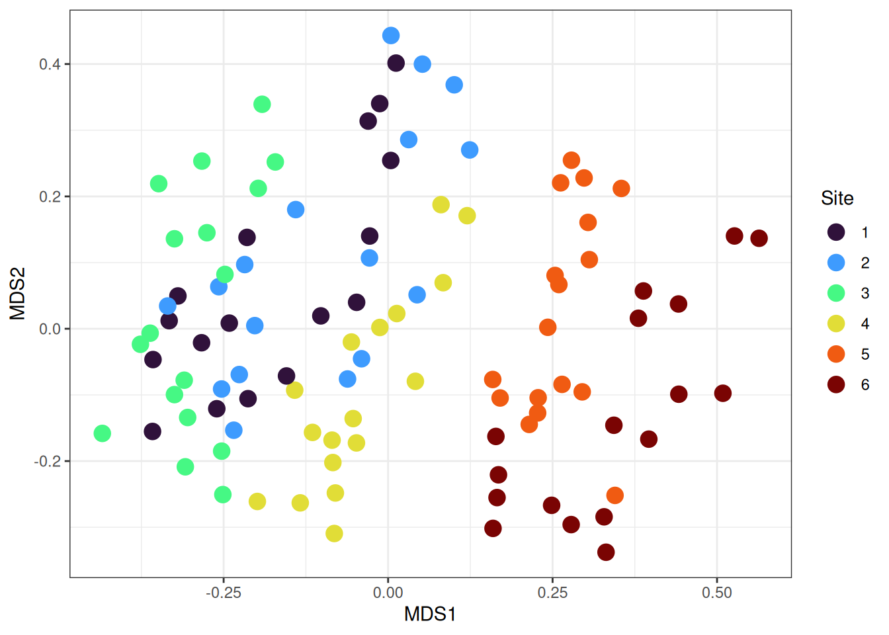
# hab year
nmds.jc_hab = metaMDS(m_hab, distance = "jaccard", k = 2, try = 100)
## Square root transformation
## Wisconsin double standardization
## Run 0 stress 0.000560408
## Run 1 stress 9.988918e-05
## ... New best solution
## ... Procrustes: rmse 0.0008172807 max resid 0.001169857
## ... Similar to previous best
## Run 2 stress 9.091812e-05
## ... New best solution
## ... Procrustes: rmse 0.0001485676 max resid 0.0003702017
## ... Similar to previous best
## Run 3 stress 0.0002066927
## ... Procrustes: rmse 0.0003327235 max resid 0.0006417625
## ... Similar to previous best
## Run 4 stress 0.0002470685
## ... Procrustes: rmse 0.0003877286 max resid 0.0007236917
## ... Similar to previous best
## Run 5 stress 0.0001217114
## ... Procrustes: rmse 0.0001693036 max resid 0.0004262136
## ... Similar to previous best
## Run 6 stress 0.0002511533
## ... Procrustes: rmse 0.0004082833 max resid 0.0007521257
## ... Similar to previous best
## Run 7 stress 9.991741e-05
## ... Procrustes: rmse 0.000129851 max resid 0.0003668056
## ... Similar to previous best
## Run 8 stress 0.0005507904
## ... Procrustes: rmse 0.0009426445 max resid 0.001517269
## ... Similar to previous best
## Run 9 stress 9.300433e-05
## ... Procrustes: rmse 6.77275e-05 max resid 0.0001943845
## ... Similar to previous best
## Run 10 stress 0.0001848924
## ... Procrustes: rmse 0.000294081 max resid 0.000585227
## ... Similar to previous best
## Run 11 stress 9.908304e-05
## ... Procrustes: rmse 0.0001295425 max resid 0.0003671799
## ... Similar to previous best
## Run 12 stress 0.0002786235
## ... Procrustes: rmse 0.0004417957 max resid 0.0008193865
## ... Similar to previous best
## Run 13 stress 8.509503e-05
## ... New best solution
## ... Procrustes: rmse 6.465156e-05 max resid 0.0001862522
## ... Similar to previous best
## Run 14 stress 9.63411e-05
## ... Procrustes: rmse 4.664716e-05 max resid 0.0002399993
## ... Similar to previous best
## Run 15 stress 0.0001820437
## ... Procrustes: rmse 0.0002762079 max resid 0.0005820117
## ... Similar to previous best
## Run 16 stress 0.000221999
## ... Procrustes: rmse 0.0003419576 max resid 0.000677384
## ... Similar to previous best
## Run 17 stress 0.0003901168
## ... Procrustes: rmse 0.0006158475 max resid 0.001066897
## ... Similar to previous best
## Run 18 stress 0.0001742375
## ... Procrustes: rmse 0.0002627004 max resid 0.0005619912
## ... Similar to previous best
## Run 19 stress 0.0001273746
## ... Procrustes: rmse 0.0001873746 max resid 0.0004283171
## ... Similar to previous best
## Run 20 stress 9.633469e-05
## ... Procrustes: rmse 0.0001291502 max resid 0.0003648848
## ... Similar to previous best
## *** Best solution repeated 8 times
## Warning in metaMDS(m_hab, distance = "jaccard", k = 2, try = 100): stress is
## (nearly) zero: you may have insufficient data
nmds_output_hab = data.frame(nmds.jc_hab[["points"]]) |>
rownames_to_column('sy') |>
separate(sy, into = c("Habitat", "Year"), sep = "_")
ggplot(nmds_output_hab, aes(MDS1, MDS2, color = Habitat))+
geom_point(size = 4)+
scale_color_viridis_d(option = 'turbo')+
theme_bw()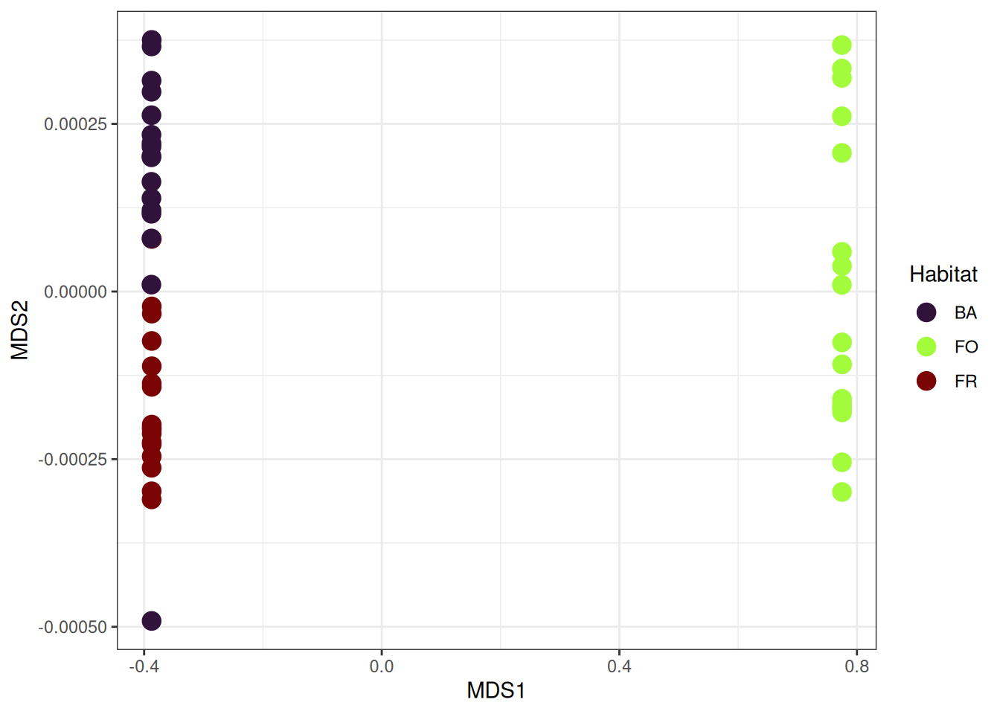
# sh year
nmds.jc_sh = metaMDS(m_sh, distance = "jaccard", k = 2, try = 100)
## Square root transformation
## Wisconsin double standardization
## Run 0 stress 0.04005697
## Run 1 stress 0.04005697
## ... Procrustes: rmse 8.509888e-05 max resid 0.0001548666
## ... Similar to previous best
## Run 2 stress 0.04005697
## ... Procrustes: rmse 8.920635e-05 max resid 0.0001631127
## ... Similar to previous best
## Run 3 stress 0.04005696
## ... New best solution
## ... Procrustes: rmse 7.700184e-05 max resid 0.0001407652
## ... Similar to previous best
## Run 4 stress 0.05140728
## Run 5 stress 0.04005698
## ... Procrustes: rmse 2.820097e-05 max resid 5.146814e-05
## ... Similar to previous best
## Run 6 stress 0.05140733
## Run 7 stress 0.05140731
## Run 8 stress 0.04005696
## ... New best solution
## ... Procrustes: rmse 3.436608e-05 max resid 6.210451e-05
## ... Similar to previous best
## Run 9 stress 0.0503471
## Run 10 stress 0.04005704
## ... Procrustes: rmse 0.0001090323 max resid 0.0001983208
## ... Similar to previous best
## Run 11 stress 0.04065214
## Run 12 stress 0.04065218
## Run 13 stress 0.040057
## ... Procrustes: rmse 8.457494e-05 max resid 0.0001544087
## ... Similar to previous best
## Run 14 stress 0.040057
## ... Procrustes: rmse 8.849569e-05 max resid 0.0001613459
## ... Similar to previous best
## Run 15 stress 0.04005699
## ... Procrustes: rmse 8.266782e-05 max resid 0.0001509436
## ... Similar to previous best
## Run 16 stress 0.04005699
## ... Procrustes: rmse 7.978978e-05 max resid 0.0001453977
## ... Similar to previous best
## Run 17 stress 0.04005699
## ... Procrustes: rmse 7.753797e-05 max resid 0.000141224
## ... Similar to previous best
## Run 18 stress 0.05140729
## Run 19 stress 0.04005698
## ... Procrustes: rmse 5.992376e-05 max resid 0.0001081441
## ... Similar to previous best
## Run 20 stress 0.04005695
## ... New best solution
## ... Procrustes: rmse 1.110217e-05 max resid 1.782023e-05
## ... Similar to previous best
## *** Best solution repeated 1 times
nmds_output_sh = data.frame(nmds.jc_sh[["points"]]) |>
rownames_to_column('sy') |>
separate(sy, into = c("Habitat", "Site"), sep = "_")
ggplot(nmds_output_sh, aes(MDS1, MDS2, color = Habitat))+
geom_point(size = 4)+
scale_color_viridis_d(option = 'turbo')+
theme_bw()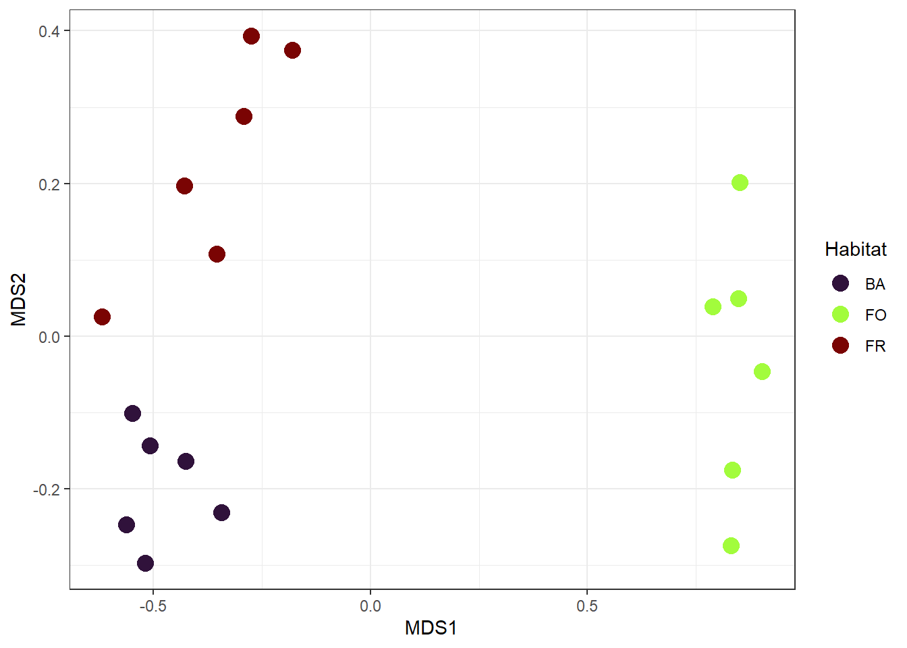
- Short essay question 3.1: Based on the nMDS, what can you conclude about the communities/assemblages across habitats? (5 pts)
Section 6 - Community trajectory (20 pts)
- Plot the yearly trajectory for each habitat and site using Bray-Curtis dissimilarity on a community matrix of the top 10 species based on total abundance across all sites and habitats (5 pts).
df10 = read_csv("data/MCR_LTER_Annual_Fish_Survey_20230615.csv") |>
group_by(Taxonomy) |>
summarize(n = sum(Count)) |>
slice_max(n,n = 10)
## Warning: One or more parsing issues, call `problems()` on your data frame for details,
## e.g.:
## dat <- vroom(...)
## problems(dat)
## Rows: 100841 Columns: 25
## ── Column specification ────────────────────────────────────────────────────────
## Delimiter: ","
## chr (9): Year, Location, Habitat, Taxonomy, Family, Comment, Coarse_Trophi...
## dbl (13): Site, Transect, Swath, Count, Total_Length, Length_Anomaly, Bioma...
## date (1): Date
## time (2): Start, End
##
## ℹ Use `spec()` to retrieve the full column specification for this data.
## ℹ Specify the column types or set `show_col_types = FALSE` to quiet this message.
df = read_csv("data/MCR_LTER_Annual_Fish_Survey_20230615.csv") |>
filter(Taxonomy %in% df10$Taxonomy) |>
group_by(Site, Habitat, Year, Taxonomy) |>
summarize(abund = sum(Count), .groups = 'drop') |>
pivot_wider(names_from = Taxonomy, values_from = abund, values_fill = 0) |>
unite(hy, c('Habitat', 'Site', 'Year')) |>
column_to_rownames('hy')
## Warning: One or more parsing issues, call `problems()` on your data frame for details,
## e.g.:
## dat <- vroom(...)
## problems(dat)
## Rows: 100841 Columns: 25
## ── Column specification ────────────────────────────────────────────────────────
## Delimiter: ","
## chr (9): Year, Location, Habitat, Taxonomy, Family, Comment, Coarse_Trophi...
## dbl (13): Site, Transect, Swath, Count, Total_Length, Length_Anomaly, Bioma...
## date (1): Date
## time (2): Start, End
##
## ℹ Use `spec()` to retrieve the full column specification for this data.
## ℹ Specify the column types or set `show_col_types = FALSE` to quiet this message.
nmds.br = metaMDS(df, distance = "bray", k = 2, try = 100)
## Square root transformation
## Wisconsin double standardization
## Run 0 stress 0.1239746
## Run 1 stress 0.1239746
## ... Procrustes: rmse 1.922679e-05 max resid 0.0002087958
## ... Similar to previous best
## Run 2 stress 0.1386678
## Run 3 stress 0.1232034
## ... New best solution
## ... Procrustes: rmse 0.002767507 max resid 0.04700988
## Run 4 stress 0.1232068
## ... Procrustes: rmse 0.0002757564 max resid 0.003563315
## ... Similar to previous best
## Run 5 stress 0.1322956
## Run 6 stress 0.1232029
## ... New best solution
## ... Procrustes: rmse 0.0001596319 max resid 0.002362705
## ... Similar to previous best
## Run 7 stress 0.1232063
## ... Procrustes: rmse 0.0002863506 max resid 0.003615575
## ... Similar to previous best
## Run 8 stress 0.1232068
## ... Procrustes: rmse 0.0003190699 max resid 0.003485558
## ... Similar to previous best
## Run 9 stress 0.4182689
## Run 10 stress 0.1232028
## ... New best solution
## ... Procrustes: rmse 2.34402e-05 max resid 0.0002437581
## ... Similar to previous best
## Run 11 stress 0.1232034
## ... Procrustes: rmse 0.0001483656 max resid 0.002279918
## ... Similar to previous best
## Run 12 stress 0.1239747
## Run 13 stress 0.1329726
## Run 14 stress 0.1232063
## ... Procrustes: rmse 0.0002790962 max resid 0.003437947
## ... Similar to previous best
## Run 15 stress 0.1232068
## ... Procrustes: rmse 0.0003172405 max resid 0.003506194
## ... Similar to previous best
## Run 16 stress 0.1232068
## ... Procrustes: rmse 0.0003189466 max resid 0.003455912
## ... Similar to previous best
## Run 17 stress 0.1239742
## Run 18 stress 0.1232063
## ... Procrustes: rmse 0.0002814913 max resid 0.003541767
## ... Similar to previous best
## Run 19 stress 0.1392271
## Run 20 stress 0.1428651
## *** Best solution repeated 6 times
# convert nMDS to tibble
df_nmds = data.frame(nmds.br[["points"]]) |>
rownames_to_column('sy') |>
separate(sy, into = c('Habitat', "Site", "Year"), sep = "_") |>
# add end points of each segment for arrow
group_by(Site) |>
mutate(xend = lead(MDS1), yend = lead(MDS2))
# plot
ggplot(df_nmds, aes(MDS1, MDS2))+
geom_segment(aes(xend = xend, yend = yend, color = Site),
linewidth = 1,
arrow = arrow(length = unit(0.25, "cm")))+
#ggrepel::geom_text_repel(aes(label=Year))+
facet_wrap(~Habitat)+
labs(x = 'NMDS1', y = 'NMDS2',
color = 'Site')+
scale_color_viridis_d(option = 'turbo')+
theme_bw()+
theme(legend.position = 'bottom')
## Warning: Removed 6 rows containing missing values or values outside the scale range
## (`geom_segment()`).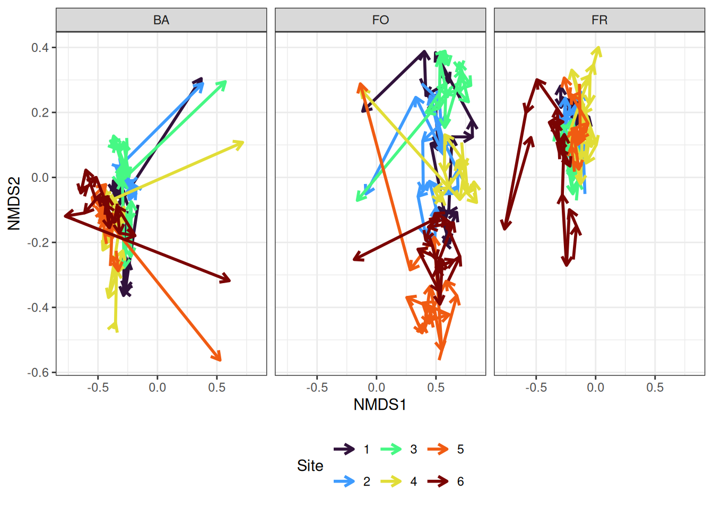
# plot
ggplot(df_nmds, aes(MDS1, MDS2))+
geom_segment(aes(xend = xend, yend = yend, color = Habitat),
linewidth = 1,
arrow = arrow(length = unit(0.25, "cm")))+
#ggrepel::geom_text_repel(aes(label=Year))+
facet_wrap(~Site)+
labs(x = 'NMDS1', y = 'NMDS2',
color = 'Habitat')+
scale_color_viridis_d(option = 'turbo')+
theme_bw()+
theme(legend.position = 'bottom')
## Warning: Removed 1 row containing missing values or values outside the scale range
## (`geom_segment()`).
## Warning: Removed 1 row containing missing values or values outside the scale range
## (`geom_segment()`).
## Removed 1 row containing missing values or values outside the scale range
## (`geom_segment()`).
## Removed 1 row containing missing values or values outside the scale range
## (`geom_segment()`).
## Removed 1 row containing missing values or values outside the scale range
## (`geom_segment()`).
## Removed 1 row containing missing values or values outside the scale range
## (`geom_segment()`).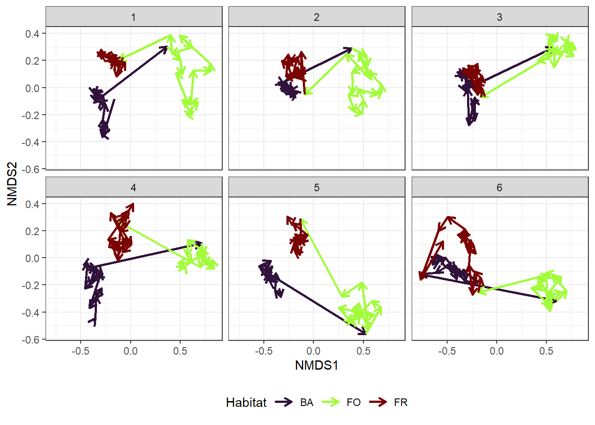
- Calculate the total path length for each site/habitat combination (2 pts).
meta = tibble(nam = row.names(df)) |>
separate(nam, into = c('Habitat', "Site", "Year"), sep = "_") |>
mutate(hab_site = paste(Habitat, Site, sep = '_'))
# site data
site = meta$hab_site
# survey
survey = meta$Year |> as.numeric()
dist = vegdist(df, method = 'bray')
library(ecotraj)
## Loading required package: Rcpp
# define trajectory
d = defineTrajectories(dist, sites = site, surveys =survey)
trajectoryLengths(d)
## S1 S2 S3 S4 S5 S6 S7
## BA_1 0.24907063 0.13569322 0.1420983 0.1725067 0.18809202 0.2654261 0.12283737
## FO_1 0.22398729 0.16519739 0.2536411 0.5554855 0.28268734 0.3251121 0.46474484
## FR_1 0.27527216 0.17632242 0.1557093 0.1416026 0.05810398 0.2352941 0.06948640
## BA_2 0.10625910 0.18181818 0.1186441 0.2393162 0.15873016 0.2102637 0.21739130
## FO_2 0.32181425 0.18819848 0.2397172 0.3289624 0.29316420 0.2014787 0.31148626
## FR_2 0.22626026 0.05914718 0.1207116 0.1036649 0.10103872 0.1433418 0.26103796
## BA_3 0.30311615 0.26943005 0.1746032 0.2058111 0.20833333 0.2490842 0.22352941
## FO_3 0.08541267 0.16483516 0.3529674 0.1586369 0.21019108 0.2594160 0.13780919
## FR_3 0.24774775 0.19658120 0.1217712 0.2397163 0.27969349 0.1914894 0.30091185
## BA_4 0.21766562 0.18429003 0.1666667 0.1273885 0.16516517 0.2380952 0.17241379
## FO_4 0.25628584 0.26059322 0.1660882 0.4316222 0.28743961 0.3210634 0.25790514
## FR_4 0.42325581 0.34736842 0.2329545 0.2415902 0.21613833 0.2191011 0.27981651
## BA_5 0.25594406 0.11041009 0.2023460 0.1246883 0.05035971 0.1810450 0.28040541
## FO_5 0.40095087 0.24037340 0.2882883 0.2716338 0.34809232 0.2488510 0.29862175
## FR_5 0.32743363 0.14611006 0.2128060 0.2154116 0.20270270 0.1946796 0.08490566
## BA_6 0.18506998 0.17503805 0.1784615 0.2054795 0.14285714 0.2152134 0.10849453
## FO_6 0.41408822 0.09732432 0.2955099 0.3384030 0.25919935 0.1841746 0.42643392
## FR_6 0.19313305 0.31663685 0.3296501 0.4087838 0.18548387 0.2814815 0.09360731
## S8 S9 S10 S11 S12 S13 S14
## BA_1 0.12510936 0.2084592 0.19082377 0.07719928 0.1167347 0.2838095 0.13868613
## FO_1 0.22130178 0.2576295 0.40987124 0.55187500 0.3533333 0.5386297 0.39097266
## FR_1 0.14558473 0.1666667 0.24258290 0.14641745 0.1898274 0.2363213 0.18140930
## BA_2 0.21415929 0.3218143 0.28146853 0.21992337 0.1631108 0.3250000 0.20099875
## FO_2 0.24105145 0.3534694 0.36222006 0.25776603 0.1995565 0.4016094 0.37534626
## FR_2 0.25776173 0.3546713 0.20227920 0.23500000 0.1866029 0.1095477 0.25059102
## BA_3 0.22422954 0.2450331 0.29100529 0.07479862 0.1547170 0.2259084 0.21268657
## FO_3 0.17349092 0.2041408 0.26064516 0.08015918 0.1108840 0.2183673 0.28709455
## FR_3 0.12558140 0.1319857 0.22958398 0.20124805 0.2557510 0.1661808 0.17460317
## BA_4 0.29968454 0.2166018 0.16784203 0.18975904 0.2760000 0.1294118 0.27007299
## FO_4 0.12978986 0.2732394 0.41237113 0.27076462 0.2345146 0.2483400 0.36107808
## FR_4 0.33442088 0.2118519 0.25463744 0.18164436 0.2569002 0.1496746 0.28540305
## BA_5 0.10560816 0.1393728 0.14114114 0.22319475 0.2056738 0.1136654 0.20827179
## FO_5 0.22210636 0.2362205 0.35887612 0.14809312 0.2324115 0.3970407 0.09309309
## FR_5 0.06939704 0.2406692 0.11388456 0.15109890 0.0862069 0.1785714 0.23591549
## BA_6 0.10517241 0.2636364 0.08281573 0.16990291 0.1327913 0.2132565 0.29044834
## FO_6 0.35747953 0.3379015 0.34184397 0.11717172 0.1967532 0.3120894 0.54989733
## FR_6 0.10000000 0.1980559 0.36335404 0.23636364 0.1582609 0.3548387 0.25000000
## S15 S16 Path
## BA_1 0.11084337 0.11140584 2.638795
## FO_1 0.35389360 0.23076923 5.579132
## FR_1 0.25612472 0.30582011 2.982546
## BA_2 0.26829268 0.10544218 3.332633
## FO_2 0.33787879 0.30221882 4.715938
## FR_2 0.14843750 0.15789474 2.917988
## BA_3 0.10236220 0.23963964 3.404288
## FO_3 0.24130773 0.28779070 3.233149
## FR_3 0.15505618 0.24568966 3.263591
## BA_4 0.13043478 0.19450801 3.146000
## FO_4 0.12699285 0.29300119 4.331089
## FR_4 0.33888889 0.15337423 4.127020
## BA_5 0.13043478 0.10447761 2.577039
## FO_5 0.40777667 0.45997866 4.652408
## FR_5 0.07462687 0.06521739 2.599637
## BA_6 0.16962025 0.16114790 2.799406
## FO_6 0.25331917 0.37174721 4.853336
## FR_6 0.55020080 0.65597668 4.675827
tl = trajectoryLengths(d) |>
rownames_to_column(var = 'site') |>
as_tibble() |>
separate(site, into = c("Habitat", "Site"), sep = "_")
# total trajectory length
ggplot(tl, aes(Habitat, Path, fill = Site))+
geom_col(position = 'dodge')+
labs(x = 'site', y = 'Trajectory total distance')+
scale_fill_viridis_d()+
theme_bw()+
theme(legend.position = 'bottom')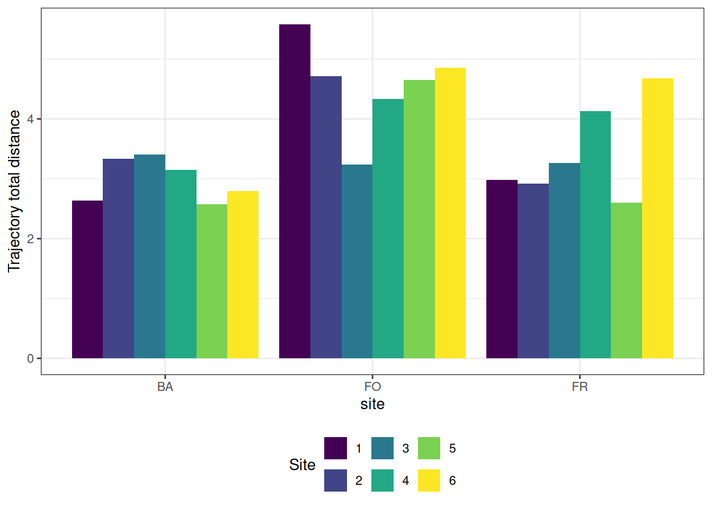
# total trajectory length
ggplot(tl, aes(Site, Path, fill = Habitat))+
geom_col(position = 'dodge')+
labs(x = 'site', y = 'Trajectory total distance')+
scale_fill_viridis_d(option = 'turbo')+
theme_bw()+
theme(legend.position = 'bottom')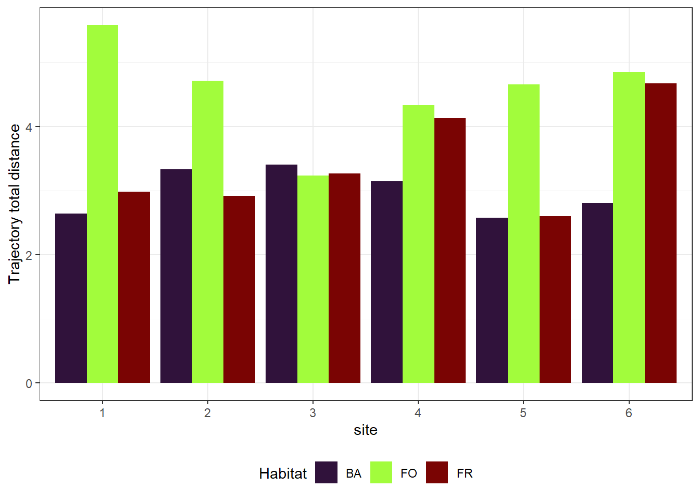
- Plot the speed of change for each yearly time step at each site (3 pts).
# segment length
tll = tl |>
pivot_longer(S1:S16, names_to = 'seg', values_to = 'len') |>
mutate(seg = factor(seg, levels = c('S1', 'S2','S3', 'S4',
'S5', 'S6','S7', 'S8',
'S9', 'S10','S11',
'S12', 'S13', 'S14',
'S15', 'S16')))
# plot
ggplot(tll, aes(seg, len, group = Site, color = Site))+
geom_point(size = 2.5)+
geom_line(linewidth = 1)+
labs(x = 'Segment', y = 'Speed of change')+
scale_x_discrete(labels =c('2006-2007', '2007-2008', '2008-2009',
'2009-2010', '2010-2011', '2011-2012',
'2012-2013', '2013-2014', '2014-2015',
'2015-2016', '2016-2017', '2017-2018',
'2018-2019', '2019-2020', '2020-2021',
'2021-2022' ))+
scale_color_viridis_d(option = 'turbo')+
facet_wrap(~Habitat)+
theme_bw()+
theme(legend.position = 'bottom',
axis.text.x = element_text(angle = 90))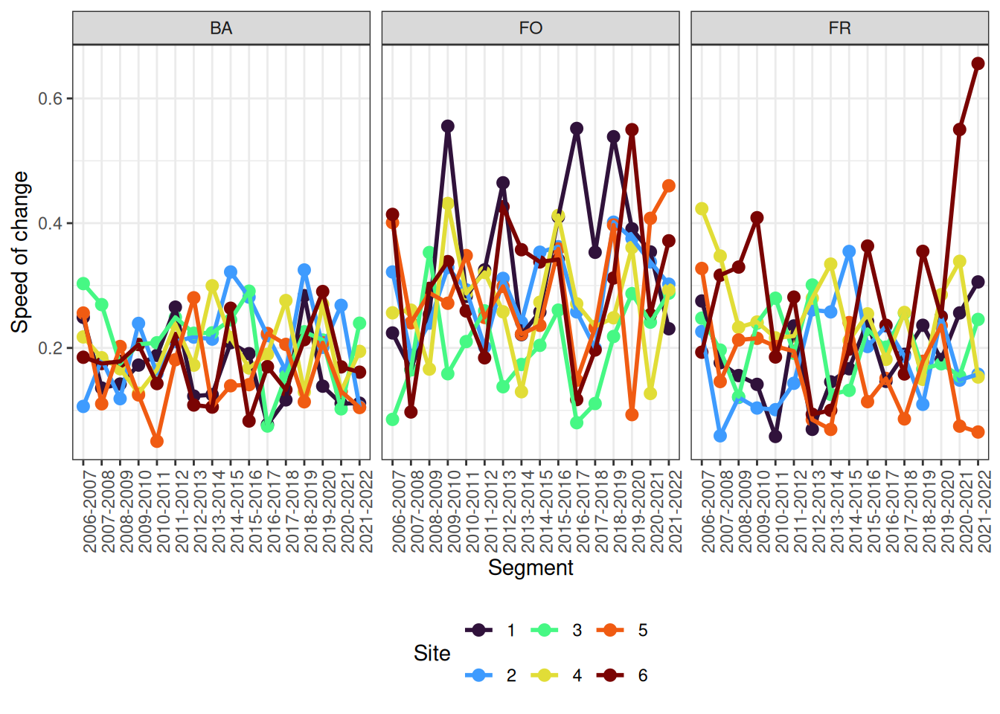
# plot
ggplot(tll, aes(seg, len, group = Habitat, color = Habitat))+
geom_point(size = 2.5)+
geom_line(linewidth = 1)+
labs(x = 'Segment', y = 'Speed of change')+
scale_x_discrete(labels =c('2006-2007', '2007-2008', '2008-2009',
'2009-2010', '2010-2011', '2011-2012',
'2012-2013', '2013-2014', '2014-2015',
'2015-2016', '2016-2017', '2017-2018',
'2018-2019', '2019-2020', '2020-2021',
'2021-2022' ))+
scale_color_viridis_d(option = 'turbo')+
facet_wrap(~Site)+
theme_bw()+
theme(legend.position = 'bottom',
axis.text.x = element_text(angle = 90))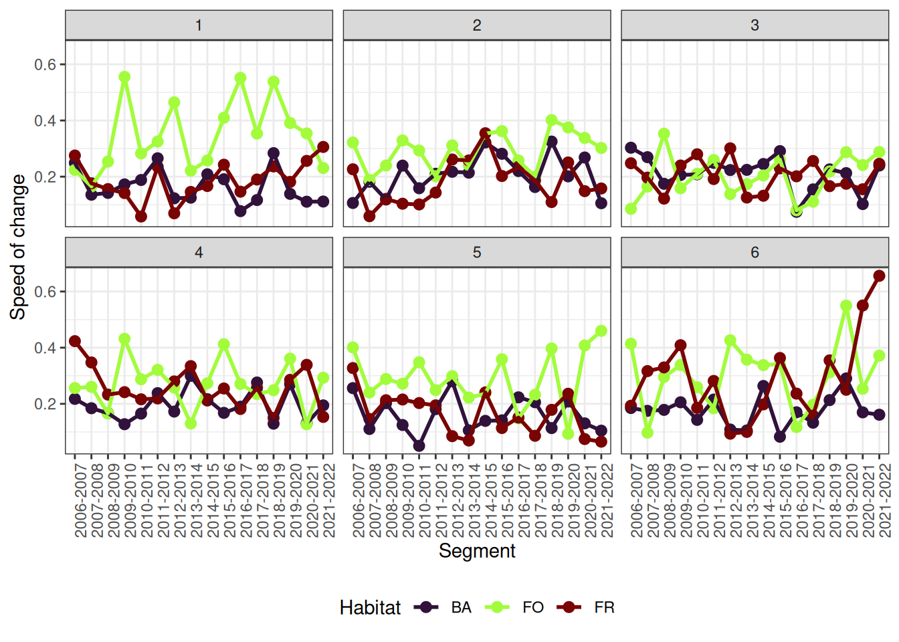
- Short essay question 3.1: Based on the community trajectory, speed of change, and total path lengths, how does the community trajectory across each site/habitat compare? Are there any years where there was synchronous change at each sites or habitats? (5 pts).